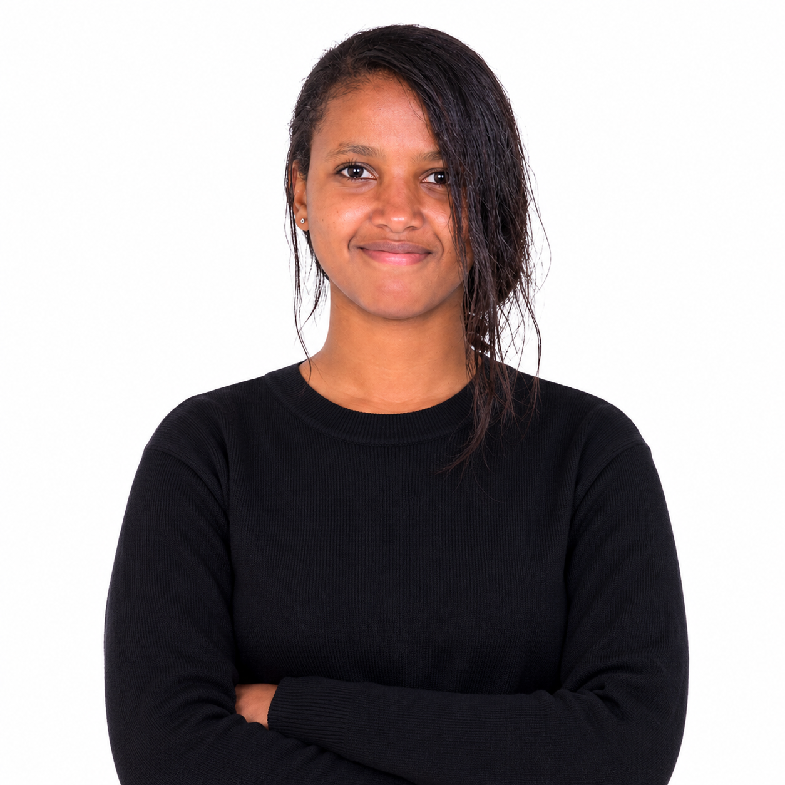

Hello, I'm Mahider Feleke.
Software Engineering Student | Aspiring AI/ML Engineer | Project Builder

I study Software Engineering at Addis Ababa Science and Technology University and enjoy building practical software and machine learning systems that solve real problems.
I learn by building, testing, and improving real projects. My work and learning have included assistive technology, predictive task allocation, natural language processing, and retrieval augmented generation (RAG).
"Build with curiosity. Test with care. Keep learning."
Visit my projects and achievements to explore my work in assistive technology, predictive modeling, and AI/ML.